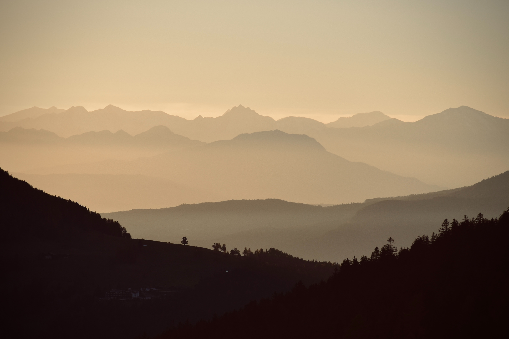
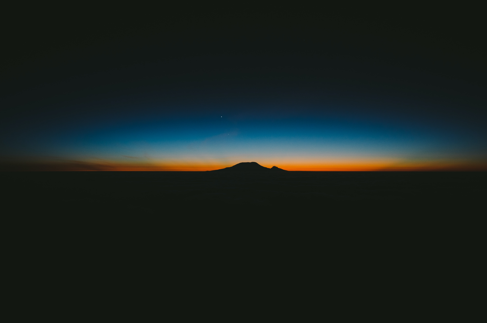

Travel Guide
Travel, see, live

As I gaze upon the misty valley before me, a sense of enchantment fills
the air. The scene unfolds like a painting, with nature's brushstrokes
delicately draped across the landscape. The soft veil of mist shrouds the
distant hills, lending an air of mystery to the surroundings.
The trees, their silhouettes blurred by the mist, stand tall and proud,
reaching for the heavens. Their branches, adorned with dew-kissed leaves,
create a captivating play of light and shadow. Nature's symphony fills the
air as the gentle breeze whispers through the valley, rustling the leaves
and carrying the faint scent of earth and dampness.
The mist casts a mystical spell, imbuing the scene with a serene and
ethereal quality. It creates a sense of separation, as if the valley
exists in its own world, separate from the hustle and bustle of everyday
life. It invites contemplation, drawing one's gaze deeper into its depths,
urging exploration of the unknown.
Through the mist, the contours of the landscape slowly emerge, revealing
rolling hills and meandering streams. The soft hues of greens and blues
blend together seamlessly, creating a harmonious palette that soothes the
eye and calms the soul. The muted sunlight peeks through the mist, casting
a soft, diffused glow that adds to the enchantment of the moment.
In this misty valley, time seems to stand still. It is a sanctuary where
one can escape the cacophony of the outside world and find solace in the
embrace of nature. The tranquility and serenity that permeate the air
offer a respite from the chaos of modern life, reminding us to slow down,
breathe, and appreciate the beauty that surrounds us.
As I take in this breathtaking vista, I am reminded of the ephemeral
nature of life itself. Like the mist that comes and goes, the moments we
cherish are fleeting. Yet, in their fleetingness, they hold a profound
beauty and remind us of the preciousness of each passing second.
The misty valley view stands as a testament to the wonders of the natural
world and its ability to captivate and inspire. It invites us to immerse
ourselves in its allure, to embrace the unknown, and to find tranquility
in the midst of life's uncertainties. In this mystical realm, one can
truly lose themselves and discover a renewed sense of wonder and
appreciation for the world we inhabit.

As the sun retreats behind the horizon, casting a soft glow on the land, a
breathtaking scene unfolds before our eyes. Nestled below a snow-peaked
mountain range, a small town comes to life under the gentle embrace of a
winter's night.
The towering mountains, adorned with pristine white snow, reach towards
the starlit sky, creating a majestic backdrop that commands both respect
and admiration. The moon, full and radiant, casts its ethereal light upon
the landscape, enhancing the mystical atmosphere of the scene.
From our vantage point, perched high above the town, we witness a
mesmerizing spectacle. The town's lights twinkle like stars themselves,
their warm glow spreading a sense of comfort and serenity. The narrow
streets and cozy houses are nestled together, forming a tight-knit
community that finds solace in the embrace of the mountains.
A tranquil lake, nestled at the foot of the mountains, mirrors the scene
above, reflecting the town's lights in shimmering ripples. The surface of
the water appears almost like liquid glass, smooth and serene, capturing
the essence of this captivating moment. The reflection adds an extra layer
of enchantment, as if the town and its lights have been duplicated in a
dreamlike world.
Silence prevails, interrupted only by the occasional hushed whispers of
the wind passing through the pines. The air is crisp and invigorating,
carrying the scent of freshly fallen snow. It fills our lungs, awakening a
sense of wonder and awe, as we stand in awe of the natural beauty that
surrounds us.
As the night deepens, a sense of tranquility washes over the landscape,
instilling a feeling of harmony between nature and human habitation. This
enchanting view reminds us of the delicate balance between the wild and
the civilized, as the small town finds solace and inspiration in the
grandeur of the mountains. we find ourselves immersed in a captivating
tapestry of nature's beauty and human endeavor. It is a scene that stirs
the soul, evoking a sense of peace, admiration, and gratitude for the
wonders that surround us.

As the first rays of the morning sun grace the earth, a breathtaking sight
unfolds before us. With the silhouette of a hill rising proudly above the
surrounding plains, the horizon becomes a canvas for nature's vibrant
palette, casting a mesmerizing glow upon the sky.
The dark sky serves as a backdrop, its deep hue contrasting with the
emerging colors of the sunrise. A gradient of golden orange, yellow, and
hints of blue creates a surreal atmosphere, as if the heavens themselves
are awash with a symphony of hues. The transition from darkness to light
paints a picture of anticipation and new beginnings.
The hill, standing steadfast against the horizon, becomes a focal point in
this awe-inspiring scene. Its contours are accentuated by the warm rays of
the sun, casting long shadows that stretch across the plains below. The
hill embodies strength and resilience, a testament to the enduring power
of nature.
As the sunlight intensifies, the sky transforms into a magnificent display
of vibrant colors. The golden hues gradually deepen, merging seamlessly
with fiery oranges and soft yellows. The blue sky, still lingering from
the night, adds a touch of serenity, creating a striking contrast against
the warmth of the sunrise.
The air is filled with a sense of tranquility and anticipation. The world
awakens from its slumber, and the stillness of the early morning is
gradually replaced by the gentle rustling of leaves and the awakening of
wildlife. It is a time of transition, where the promise of a new day hangs
delicately in the air.
This sunrise vista serves as a reminder of the beauty and power of
nature's cycles. It symbolizes the eternal rhythm of life, as each dawn
brings forth the opportunity for growth, renewal, and endless
possibilities. It is a spectacle that captivates the senses and nourishes
the soul, filling us with a profound appreciation for the wonders of the
natural world.
As we witness this majestic sunrise, with its gradient of golden orange,
yellow, and blue, we can't help but be reminded of the ever-changing
nature of existence and the inherent beauty that lies within it.
@Alpha-jiri
written by:
Keter Titus